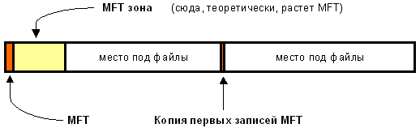
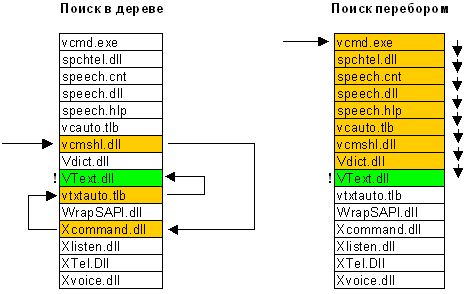
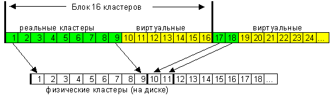

Как и любая другая система, NTFS делит все полезное место на кластеры - блоки данных, используемые единовременно. NTFS поддерживает почти любые размеры кластеров - от 512 байт до 64 Кбайт, неким стандартом же считается кластер размером 4 Кбайт. Никаких аномалий кластерной структуры NTFS не имеет.
Диск NTFS условно делится на две части. Первые 12% диска отводятся под так называемую MFT зону - пространство, в которое растет метафайл MFT. Запись каких-либо данных в эту область невозможна. MFT-зона всегда держится пустой - это делается для того, чтобы самый главный, служебный файл (MFT) не фрагментировался при своем росте. Остальные 88% диска представляют собой обычное пространство для хранения файлов.

Рисунок 1.1 Структура диска
Свободное место диска, однако, включает в себя всё физически свободное место - незаполненные куски MFT-зоны туда тоже включаются. Механизм использования MFT-зоны таков: когда файлы уже нельзя записывать в обычное пространство, MFT-зона просто сокращается (в текущих версиях операционных систем ровно в два раза), освобождая таким образом место для записи файлов. При освобождении места в обычной области MFT зона может снова расширится. При этом не исключена ситуация, когда в этой зоне остались и обычные файлы: никакой аномалии тут нет. Что ж, система старалась оставить её свободной, но ничего не получилось. Метафайл MFT все-таки может фрагментироваться, хоть это и было бы нежелательно.
Файловая система NTFS представляет собой выдающееся достижение структуризации: каждый элемент системы представляет собой файл - даже служебная информация. Самый главный файл на NTFS называется MFT, или Master File Table - общая таблица файлов. Именно он размещается в MFT зоне и представляет собой централизованный каталог всех остальных файлов диска, и, как не парадоксально, себя самого. MFT поделен на записи фиксированного размера (обычно 1 Кбайт), и каждая запись соответствует, какому либо файлу (в общем смысле этого слова). Первые 16 файлов носят служебный характер и недоступны операционной системе - они называются метафайлами, причем самый первый метафайл - сам MFT. Эти первые 16 элементов MFT - единственная часть диска, имеющая фиксированное положение. Интересно, что вторая копия первых трех записей, для надежности (они очень важны) хранится ровно посередине диска. Остальной MFT-файл может располагаться, как и любой другой файл, в произвольных местах диска - восстановить его положение можно с помощью его самого, "зацепившись" за самую основу - за первый элемент MFT.
Первые 16 файлов NTFS (метафайлы) носят служебный характер. Каждый из них отвечает за какой-либо аспект работы системы. Преимущество настолько модульного подхода заключается в поразительной гибкости - например, на FAT-е физическое повреждение в самой области FAT фатально для функционирования всего диска, а NTFS может сместить, даже фрагментировать по диску, все свои служебные области, обойдя любые неисправности поверхности - кроме первых 16 элементов MFT.
Метафайлы находятся корневом каталоге NTFS диска - они начинаются с символа имени "$", хотя получить какую-либо информацию о них стандартными средствами сложно. Любопытно, что и для этих файлов указан вполне реальный размер - можно узнать, например, сколько операционная система тратит на каталогизацию всего вашего диска, посмотрев размер файла $MFT. В следующей таблице приведены используемые в данный момент метафайлы и их назначение.
Таблица 1.1 Метафайлы и их назначение
|
$MFT |
сам MFT |
|
$MFTmirr |
копия первых 16 записей MFT, размещенная посередине диска |
|
$LogFile |
файл поддержки журналирования |
|
$Volume |
служебная информация - метка тома, версия файловой системы, т.д. |
|
$AttrDef |
Список стандартных атрибутов файлов на томе |
|
$. |
корневой каталог |
|
$Bitmap |
карта свободного места тома |
|
$Boot |
загрузочный сектор (если раздел загрузочный) |
| $Quota |
файл, в котором записаны права пользователей на использование дискового пространства (начал работать лишь в NT5) |
| $Upcase |
файл - таблица соответствия заглавных и прописных букв в имен файлов на текущем томе. Нужен в основном потому, что в NTFS имена файлов записываются в Unicode, что составляет 65 тысяч различных символов, искать большие и малые эквиваленты которых очень нетривиально. |
Итак, у системы есть файлы - и ничего кроме файлов:
- Обязательный элемент - запись в MFT, ведь, как было сказано ранее, все файлы диска упоминаются в MFT. В этом месте хранится вся информация о файле, за исключением собственно данных. Имя файла, размер, положение на диске отдельных фрагментов, и т.д. Если для информации не хватает одной записи MFT, то используются несколько, причем не обязательно подряд.
- Опциональный элемент - потоки данных файла. Может показаться странным определение "опциональный", но, тем не менее, ничего странного тут нет. Во-первых, файл может не иметь данных - в таком случае на него не расходуется свободное место самого диска. Во-вторых, файл может иметь не очень большой размер. Тогда идет в ход довольно удачное решение: данные файла хранятся прямо в MFT, в оставшемся от основных данных месте в пределах одной записи MFT. Файлы, занимающие сотни байт, обычно не имеют своего "физического" воплощения в основной файловой области - все данные такого файла хранятся в одном месте - в MFT.
Довольно интересно обстоит дело и с данными файла. Каждый файл на NTFS, в общем-то, имеет несколько абстрактное строение - у него нет как таковых данных, а есть потоки (streams). Один из потоков и носит привычный нам смысл - данные файла. Но большинство атрибутов файла - тоже потоки! Таким образом, получается, что базовая сущность у файла только одна - номер в MFT, а всё остальное опционально. Данная абстракция может использоваться для создания довольно удобных вещей - например, файлу можно "прилепить" еще один поток, записав в него любые данные - например, информацию об авторе и содержании файла, как это сделано в Windows 2000 (самая правая закладка в свойствах файла, просматриваемых из проводника). Интересно, что эти дополнительные потоки не видны стандартными средствами: наблюдаемый размер файла - это лишь размер основного потока, который содержит традиционные данные. Можно, к примеру, иметь файл нулевой длинны, при стирании которого освободится 1 Гбайт свободного места - просто потому, что какая-нибудь хитрая программа или технология прилепила в нему дополнительный поток (альтернативные данные) гигабайтового размера. Но на самом деле в текущий момент потоки практически не используются, так что опасаться подобных ситуаций не следует, хотя гипотетически они возможны. Просто имейте в виду, что файл на NTFS - это более глубокое и глобальное понятие, чем можно себе вообразить, просто просматривая каталоги диска. Ну и напоследок: имя файла может содержать любые символы, включая полый набор национальных алфавитов, так как данные представлены в Unicode - 16-битном представлении, которое дает 65535 разных символов. Максимальная длина имени файла - 255 символов.
Каталог на NTFS представляет собой специфический файл, хранящий ссылки на другие файлы и каталоги, создавая иерархическое строение данных на диске. Файл каталога поделен на блоки, каждый из которых содержит имя файла, базовые атрибуты и ссылку на элемент MFT, который уже предоставляет полную информацию об элементе каталога. Внутренняя структура каталога представляет собой бинарное дерево. Вот что это означает: для поиска файла с данным именем в линейном каталоге, таком, например, как у FAT-а, операционной системе приходится просматривать все элементы каталога, пока она не найдет нужный. Бинарное же дерево располагает имена файлов таким образом, чтобы поиск файла осуществлялся более быстрым способом - с помощью получения двухзначных ответов на вопросы о положении файла. Вопрос, на который бинарное дерево способно дать ответ, таков: в какой группе, относительно данного элемента, находится искомое имя - выше или ниже? Мы начинаем с такого вопроса к среднему элементу, и каждый ответ сужает зону поиска в среднем в два раза. Файлы, скажем, просто отсортированы по алфавиту, и ответ на вопрос осуществляется очевидным способом - сравнением начальных букв. Область поиска, суженная в два раза, начинает исследоваться аналогичным образом, начиная опять же со среднего элемента.

Рисунок 1.2 Поиск
Вывод - для поиска одного файла среди 1000, например, FAT придется осуществить в среднем 500 сравнений (наиболее вероятно, что файл будет найден на середине поиска), а системе на основе дерева - всего около 12-ти (2^10 = 1024). Экономия времени поиска налицо. Не стоит, однако думать, что в традиционных системах (FAT) всё так запущено: во-первых, поддержание списка файлов в виде бинарного дерева довольно трудоемко, а во-вторых - даже FAT в исполнении современной системы (Windows2000 или Windows98) использует сходную оптимизацию поиска. Добавлять файл в каталог в виде дерева труднее, чем в линейный каталог: это достаточно сравнимые по времени операции - дело в том, что для того, чтобы добавить файл в каталог, нужно сначала убедится, что файла с таким именем там еще нет - и вот тут-то в линейной системе у нас будут трудности с поиском файла, описанные выше, которые с лихвой компенсируют саму простоту добавления файла в каталог.
Какую информацию можно получить, просто прочитав файл каталога? Ровно то, что выдает команда dir. Для выполнения простейшей навигации по диску не нужно лазить в MFT за каждым файлом, надо лишь читать самую общую информацию о файлах из файлов каталогов. Главный каталог диска - корневой - ничем не отличается об обычных каталогов, кроме специальной ссылки на него из начала метафайла MFT.
NTFS - отказоустойчивая система, которая вполне может привести себя в корректное состояние при практически любых реальных сбоях. Любая современная файловая система основана на таком понятии, как транзакция - действие, совершаемое целиком и корректно или не совершаемое вообще. У NTFS просто не бывает промежуточных (ошибочных или некорректных) состояний - квант изменения данных не может быть поделен на до и после сбоя, принося разрушения и путаницу - он либо совершен, либо отменен.
Описание того простого факта, что NTFS является журналируемой системой, повергло многочисленных поклонников других файловых и операционных систем в искреннее возмущение. NTFS называют системой с квази-журналированием или даже без журналирования вообще, ставя в противовес многочисленные файловые системы Unix. Говорят про фатальные сбои NTFS, восстановится от которых не удалось - данные были потеряны.
Журналируемые операции
Совершенно очевидно, что полный undo-файл, способный откатить абсолютно все операции, абсолютно невозможен как с точки зрения быстродействия, так и с точки зрения здравого смысла. Да, такое журналирование дало бы возможность восстановить большее число данных - например, при осуществлении перезаписи трех мегабайт в середине файла мы могли бы сначала сохранить новые данные в логе, затем переписать туда же предыдущие три мегабайта файла, и уж только затем осуществлять операции с реальными данными. Такой подход гарантировал бы полную определенность с судьбой информации - мы всегда смогли бы понять, какая часть данных уже записалась на диск, а какая находится в исходном, не обновленном состоянии. Такой подход имеет всего один скромный недостаток - небольшая накладочка по быстродействию: для записи на диск трех мегабайт мы вынуждены будем осуществить разнообразные дисковые операции на объем в три раза больший - девять мегабайт. Да, полное журналирование также применяется - но в основном в работе с базами данных. Если вы желаете обеспечить полное журналирование каких-либо данных, вы можете поставить MS SQL или даже Oracle, который вообще не будет пользоваться средствами какой либо файловой системы и обеспечит сохранность ваших данных в любых разумных условиях. Сторонникам же полного журналирования файловой системы, сократить быстродействие операций записи в три раза, на мой взгляд, является слишком смелым решением для обязательного применения - и на домашних компьютерах, и на серверах.
Подход разработчиков NTFS был принципиально иным. Главный девиз был, видимо, не надежность любой ценой, а неизменность быстродействия. Журналирование просто не должно было помешать работе файловой системы. Первый логичный шаг - отменить полное журналирование как абсолютно неприемлемое с точки зрения быстродействия. В NTFS применяется журналирование логических структур, а не данных пользователя - отсюда и идет фраза, что сохранность данных не гарантируется, но тем не менее корректное состояние самой системы будет поддерживаться. То, что NTFS не журналирует данные файлов, приводит на практике к одному варианту потери данных - в том же гипотетическом случае записи трех мегабайт, в случае сбоя в процессе записи никогда уже не удастся установить, какая часть данных записалась, а какая осталась неизменна. Операции, которые тем не менее журналируются системой - это операции со структурами самой системы, то есть с файлами и каталогами: добавление файлов, переименование, перенос, создание и удаление (освобождение свободного места). Журналируются также и операции дефрагментации - то есть перемещения фрагментов файлов. Одним словом, все логические операции журналированы.
Отложенная запись и контрольные точки журналирования.
Известно, что любая современная система для ускорения файловых операций вынуждена использовать кэширование, в том числе - кэширование операций записи. Так называемая отложенная запись - принцип кэширования, при котором данные, предназначенные для записи на диск, некоторое время сохраняются в кэше и лишь в свободное от других занятий время сохраняются физически. Отложенная запись очень существенно повышает эффективность дисковых операций, так как такое кэширование группирует множество операций в одну - это особенно эффективно, если запись производится в компактные участки диска. Еще один плюс отложенной записи - не мешать более нужным операциям чтения, и осуществлять запись только тогда, когда система свободна и ей не требуется доступ к диску для других нужд. Как согласовать отложенную запись с журналированием? Так как откладывание записи делает возможным потерю тех данных, которые находились в очереди на физическую запись и не успели записаться на диск до сбоя. Самое неприятное здесь даже не потеря данных, а то, что происходит рассогласование времени записи: какие-то служебные области могут быть обновлены, а какие-то смежные по смыслу - еще нет, так как их обновление могло отложиться еще на пару секунд, и не состоятся из-за сбоя.
NTFS справляется с этими проблемами с помощью смысловой интеграции операций отложенной записи и ведения журнала. При попытке начать журналируемую операцию в лог тут же записывается намерение - например, стереть файл. Это случается без задержек - на этом этапе отложенная запись не работает: это плата за присутствие журналирования, которой нельзя избежать. Но вот все остальные операции уже идут в задержанном режиме - то есть они могут состояться частично (могут еще в придачу и не в том порядке) или не состоятся вообще. Единственная задержанная операция, работа которой несколько отличается от простой записи - запись в лог об удачном завершении предыдущих транзакций, так называемая контрольная точка. Через определенные промежутки времени - обычно через каждые несколько секунд - система в обязательном порядке сбрасывает абсолютно все задержанные операции на диск. После произведения этой операции в журнал записывается простейшая запись - контрольная точка - которая говорит о том, что все предыдущие операции выполнены корректно на всех уровнях - как на логическом, так и на физическом.
Такой режим работы - с помощью записей и контрольных точек - с одной стороны, по прежнему гарантирует полностью корректную работу журналирования, а с другой стороны практически совершенно не приводит к замедлению работы: простановка контрольных точек производится, считай, мгновенно, а запись в журнал о начале операции соответствует по трудозатратам записи самих данных без отложенного кэширования. Реальная же запись, осуществляемая позже, в подавляющем числе случаев не мешает никаким операциям и не идет в ущерб производительности системы.
Проблемы отложенного журналирования: концепция дублирования информации
Вся вышеописанная теория достаточно хороша, но способна тем не менее вызвать очень неприятные последствия, если не учесть еще нескольких вещей, о которых и пойдет речь.
Рассмотрим такой случай: мы стираем файл. Журнал получил запись - "файл N стирается". Затем запаздывающему кэшу стало угодно осуществить сначала физическую пометку о том, что место, занимаемое файлом, освободилось, а уж только затем удалить файл из физических структур MFT и каталога. Допустим, диск находится в активной работе, и на освободившееся место тут же записывается другой файл. В этот момент происходит сбой. Система, загружаясь, исследует журнал и видит незавершенную операцию "файл N стирается" - вернее, как я уже описал выше, не незавершенную, а просто операцию, контрольная точка после которой отсутствует, что автоматически говорит о её незавершенности. Следующая фаза была бы "откат операции" - то есть восстановление файла. Одна незадача - место, физически занимаемое файлом, содержит уже другие данные.
Для недопущение таких ситуаций система, желающая ограничиться логическим журналированием, вынуждена применять принцип "временно занятого места". Место, освобожденное каким-либо объектом или записью о нем, не объявляется свободным до тех пор, пока физически не завершились все операции с логическими структурами. Данный механизм в NTFS, по видимому, не синхронизирован даже с проставлением контрольных точек, так как типичное время освобождения временно занятого места - около 30 секунд, точки же идут чаще.
Данный механизм применяется не только при стирании файла, но и при самых разных операциях: принцип журналирования - объект, убранный или перемещенный на новое место, должен иметь возможность корректно откатить своё "отбытие" - то есть данные, на которые ссылаются логические структуры удаляемого или перемещаемого объекта, необходимо еще на некоторое время зарезервировать как занятое место (диска/каталога). Это еще один шаг NTFS к полному журналированию, где специфическим журналом файловой информации служат сами данные освобождаемых областей, не уничтожаемые физически.
Допущения, обеспечивающие надежность:
- Жесткий диск, в штатном режиме, должен записать именно то и именно туда, что и куда ему сказано было записать операционной системой. Данный принцип нарушается в случае, если система имеет ненадежный шлейф, процессор, память или контроллер - и это самая распространенная причина сбоев NTFS. Вам поможет: не разогнанный процессор, дорогая (качественная) память, хорошая материнская плата и протокол UDMA, обеспечивающий контроль и восстановление ошибок на участке контроллер-диск.
- Жесткий диск, в случае аварии, отключения питания или получения от контроллера сигнала "сброс" (в случае внезапной перезагрузки материнской платы) обязан корректно завершить запись данных текущего физического сектора, если таковая производилась на момент аварии. Промежуточное состояние сектора не допускается. Вам помогут современные винчестеры, которые могут осуществить данную операцию даже в случае полного пропадания питания - у них хватит буферизированной в конденсаторах энергии, и их логика рассчитана на корректное поведение в случае отказа питания при записи.
- Диск обязан мгновенно осуществить запись данных, отправленных с флагом "не кэшировать". Дело в том, что многие современные диски или контроллеры обеспечивают задержанную запись. Метафайлы NTFS обновляются в режиме "писать сразу", и контроллер/диск обязан выполнять это требование.
- Жесткий диск обязан обеспечить чтение именно тех данных, которые были записаны. В случае невозможности прочесть данные выдается сигнал "ошибка". Диск не имеет права возвращать ошибочные данные (возможно, лишь частично некорректные) без сигнала об ошибке. Все современные жесткие диски имеют контрольные суммы секторов и жестко следуют этой логике поведения.
Четкое выполнение этих требований полностью гарантирует надежную работу NTFS. Структура файловой системы не будет содержать существенных ошибок даже после сбоя. Некоторые несущественные ошибки всё же появляются из-за того, что логика журналирование часто пытается завершить недоделанные операции - например, то же удаление файла - тогда как полную надежность обеспечивал бы только безусловный откат всего, что находится после последней контрольной точки. Малые несоответствия, рождающиеся из этих попыток, относятся к избыточной информации системы безопасности, не представляют никакой реальной опасности для данных - они действительно незначительны. Суть этих несоответствий чаще всего заключается в том, что на диске остаются "лишние" данные о тех режимах доступов, которые уже не понадобятся системе. Их прочистка - дело сугубо повышения производительности, как, например, дефрагментация, поэтому их наличие не является на самом деле ошибкой. В случае же обнаружения серьезных, реальных, проблем драйвер сам установит флажок тома "грязный", что проинструктирует систему проверить том при следующем его монтировании.
Подавляющее большинство фатальных ошибок NTFS происходит по вине аппаратуры, не выполняющей эти элементарные требования. Абсолютной надежности не бывает. Но Microsoft пошел по пути разделения труда - за надежность вашей аппаратуры корпорация ответственности не несет. Мой компьютер на 70% не попадает в список совместимого с Windows 2000 оборудования, и то же самое можно сказать про почти любую реальную машину, функционирующую на просторах бывшего СССР. Особенно это относится к любителям разгонять компьютеры. Вы с огромной степенью вероятности угробите NTFS в первый же год работы, если ваш процессор - 333, разогнанный на 450. И даже не раз. От любых сбоев корректного компьютера NTFS защитит, но вот от записи случайных данных в бут-сектор (копия которого, кстати, хранится в самом конце раздела) и в MFT система просто не страхуется.
Файлы NTFS имеют один довольно полезный атрибут - "сжатый". Дело в том, что NTFS имеет встроенную поддержку сжатия дисков - то, для чего раньше приходилось использовать Stacker или DoubleSpace. Любой файл или каталог в индивидуальном порядке может хранится на диске в сжатом виде - этот процесс совершенно прозрачен для приложений. Сжатие файлов имеет очень высокую скорость и только одно большое отрицательное свойство - огромная виртуальная фрагментация сжатых файлов, которая, правда, никому особо не мешает. Сжатие осуществляется блоками по 16 кластеров и использует так называемые "виртуальные кластеры" - опять же предельно гибкое решение, позволяющее добиться интересных эффектов - например, половина файла может быть сжата, а половина - нет. Это достигается благодаря тому, что хранение информации о компрессированности определенных фрагментов очень похоже на обычную фрагментацию файлов: например, типичная запись физической раскладки для реального, несжатого, файла:
кластеры файла с 1
по 43-й хранятся в кластерах диска начиная с 400-го
кластеры файла с 44 по 52-й хранятся в кластерах диска начиная с 8530-го
...
Физическая раскладка типичного сжатого файла:
кластеры файла с 1
по 9-й хранятся в кластерах диска начиная с 400-го
кластеры файла с 10 по 16-й нигде не хранятся
кластеры файла с 17 по 18-й хранятся в кластерах диска начиная с 409-го
кластеры файла с 19 по 36-й нигде не хранятся
....

Рисунок 1.3 Сжатие
Видно, что сжатый файл имеет "виртуальные" кластеры, реальной информации в которых нет. Как только система видит такие виртуальные кластеры, она тут же понимает, что данные предыдущего блока, кратного 16-ти, должны быть разжаты, а получившиеся данные как раз заполнят виртуальные кластеры - вот, по сути, и весь алгоритм.
NTFS содержит множество средств разграничения прав объектов - есть мнение, что это самая совершенная файловая система из всех ныне существующих. В теории это, без сомнения, так, но в текущих реализациях, к сожалению, система прав достаточно далека от идеала и представляет собой хоть и жесткий, но не всегда логичный набор характеристик. Права, назначаемые любому объекту и однозначно соблюдаемые системой, эволюционируют - крупные изменения и дополнения прав осуществлялись уже несколько раз и к Windows 2000 все-таки они пришли к достаточно разумному набору.
Права файловой системы NTFS неразрывно связаны с самой системой - то есть они, вообще говоря, необязательны к соблюдению другой системой, если ей дать физический доступ к диску. Для предотвращения физического доступа в Windows2000 (NT5) всё же ввели стандартную возможность. Система прав в своем текущем состоянии достаточно сложна. Если вас интересует эта тема - вы найдете множество книг по сетевой архитектуре NT, в которых это описано более чем подробно.
Эта штука была в NTFS с незапамятных времен, но использовалась очень редко - и тем не менее: Hard Link - это когда один и тот же файл имеет два имени (несколько указателей файла-каталога или разных каталогов указывают на одну и ту же MFT запись). Допустим, один и тот же файл имеет имена 1.txt и 2.txt: если пользователь сотрет файл 1, останется файл 2. Если сотрет 2 - останется файл 1, то есть оба имени, с момента создания, совершенно равноправны. Файл физически стирается лишь тогда, когда будет удалено его последнее имя.
Гораздо более практичная возможность, позволяющая делать виртуальные каталоги - ровно так же, как и виртуальные диски командой subst в DOSе. Применения достаточно разнообразны: во-первых, упрощение системы каталогов. Если вам не нравится каталог Documents and settings\Administrator\Documents, вы можете прилинковать его в корневой каталог - система будет по прежнему общаться с каталогом с дремучим путем, а вы - с гораздо более коротким именем, полностью ему эквивалентным. Для удаления связи можно воспользоваться стандартной командой rd. ВНИМАНИЕ: Попытка удаления связи с помощью проводника или других файловых менеджеров, не понимающих виртуальную природу каталога (например, FAR), приведет к удалению данных, на которые ссылается ссылка! Будьте осторожны.
Полезная возможность для людей, которые беспокоятся за свои секреты - каждый файл или каталог может также быть зашифрован, что не даст возможность прочесть его другой инсталляцией NT. В сочетании со стандартным и практически непрошибаемым паролем на загрузку самой системы, эта возможность обеспечивает достаточную для большинства применений безопасность избранных вами важных данных.